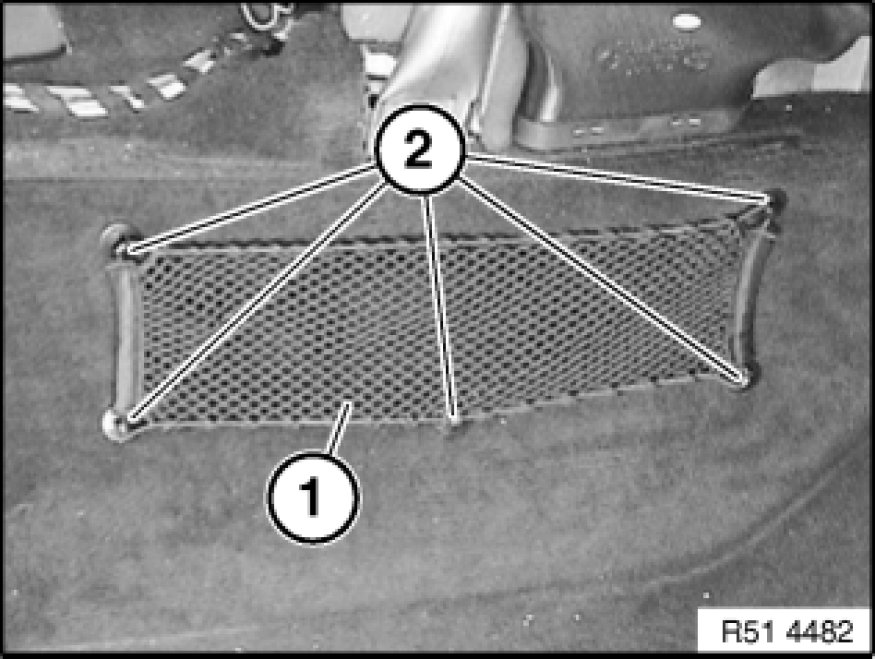

51 47 315 Removing and Installing/Replacing Front Carpet for Passenger Compartment
51 47 315 - Removing and installing/replacing front carpet for passenger compartment

Necessary preliminary tasks:
- Remove instrument panel trim 51 45 030 Removing and Installing Instrument Panel Trim
- Remove left/right front seat
- Remove front left/right entrance cover strip 51 47 000 Removing and Installing/Replacing Front (Inside) Left or Right Entrance Cover Strip
- Remove accelerator pedal module Service and Repair
Cut out carpet (1) at cutting edge (2) on left/right.
Important!
Make the cut as far as possible in the direction of the middle of the car to ensure that the cutting edges are covered by the storage compartment/instrument panel.
Pay attention to cables when cutting (risk of damage).
If necessary, guide cable back through carpet (1).
Feed out carpet (1) towards rear/top.
Cutting edges (1) shown on removed carpet (2).
Replacement:
Place removed carpet on new carpet and carry over cuts to new carpet.
Installation:
Apertures (3) serve as alignment points for fitting the carpet (2).

Replacement:
Detach stowage net (1).
Remove clips (2) for stowage net (1).